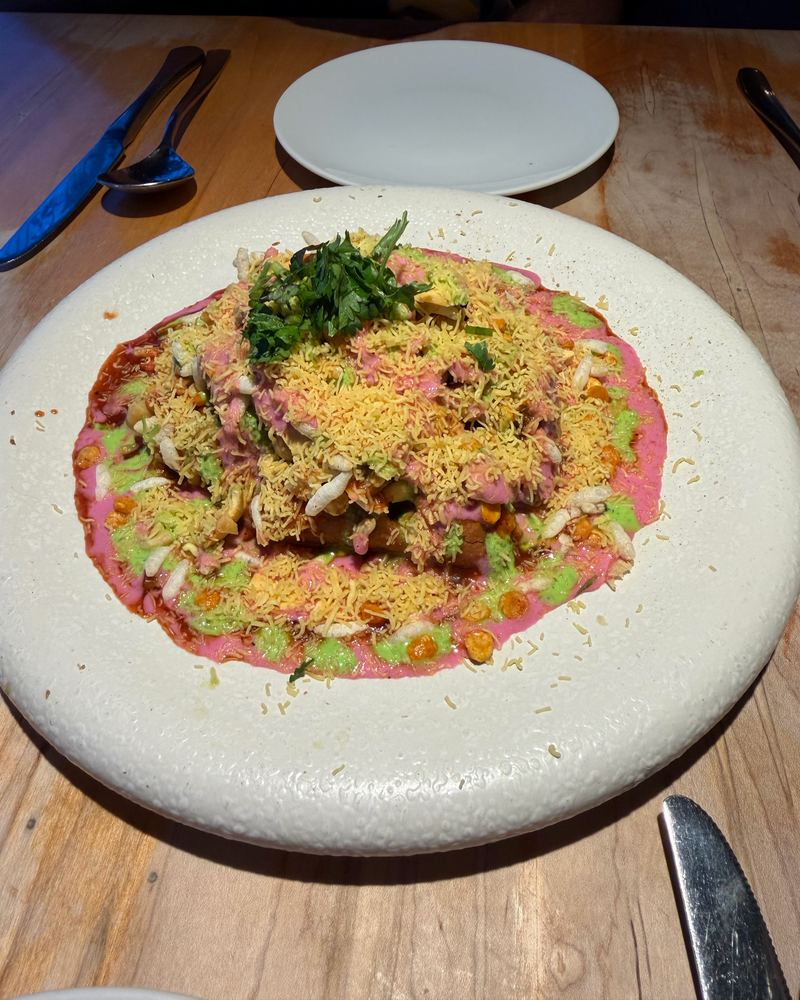
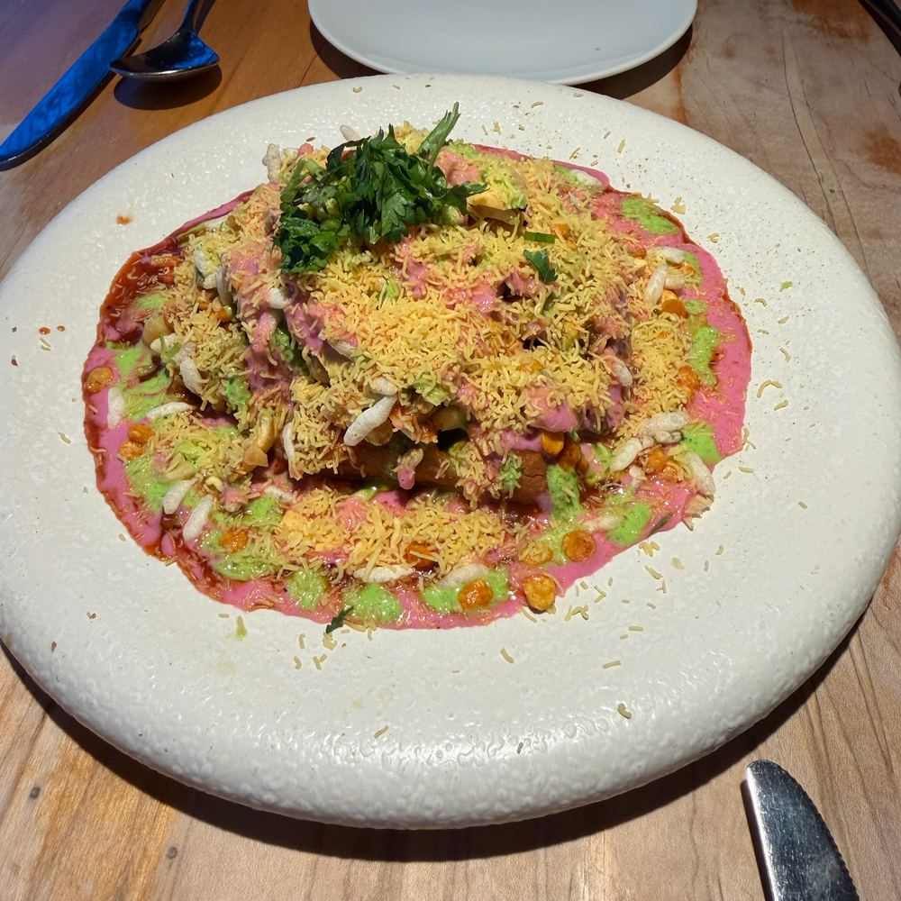
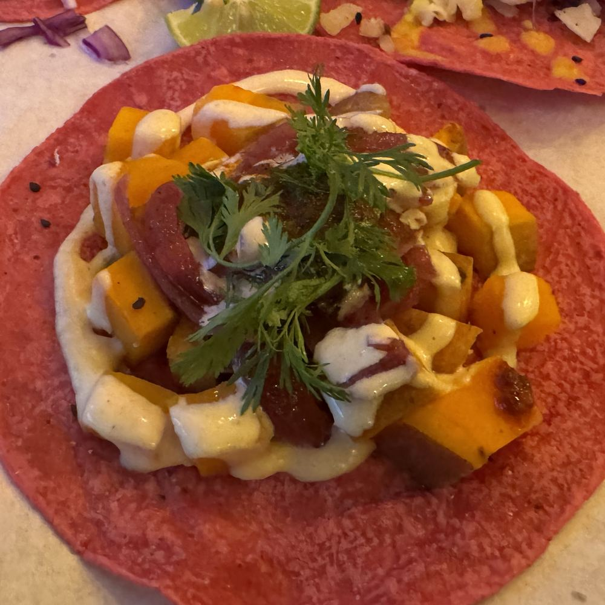
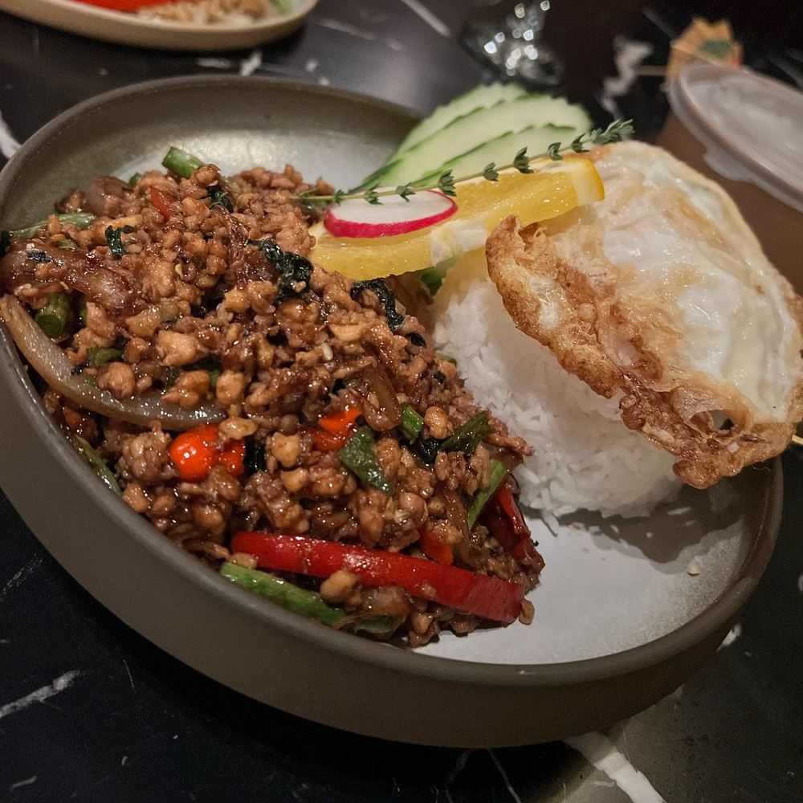

M
Marco
Ça vaut la peine · Oui
Papdi chaat, extra sev
Jaloux · 5Même place?
Réseau bouffe, entre chums seulement
Poste l'assiette. Fais-la peser. Rends-les jaloux.
Le réseau bouffe pour ceux qui commandent la deuxième poutine. Pas de calories, pas d'étoiles, pas d'inconnus.

Papdi chaat, extra sev
Comment ça marche
La caméra s'ouvre direct. L'assiette refroidit déjà.
Choisis un des trois looks. Glisse le Poids jusqu'à ce que ça ait l'air de ce que c'était.
Oui ou Non. Ce tap-là publie. Pas d'écran de révision.
Ça atterrit dans le fil de ta gang. Personne d'autre. Jamais d'inconnus.
Le Poids
C'est toi qui décides. On ne pèse jamais l'assiette. Le collant va d'un raisonnable 320 g à un kilo et demi, et c'est ça, la joke.
Belle assiette. Sieste en vue.

Trois filtres. Nommés, pas numérotés.

Pinces à épiler non incluses. Un drive-thru a soudainement l'air d'un menu dégustation.

Chaud, doré, un peu beige. La matante en a fait trop, et c'est exactement le but.

Flash de cell, comptoir au néon. Zéro regret pour l'assiette. Quelques-uns pour l'heure.
La pesée du dimanche
Les grammes de chaque assiette s'additionnent. La semaine ferme, la gang est classée, et le premier repart avec le titre de Gros Sac de la Semaine. Tout le monde reçoit une carte. Une d'elles est faite pour être postée.
Le manifeste
Pas affichées, pas devinées, pas stockées. Le collant, c'est un chiffre pour rire.
La seule critique : ça vaut la peine. Oui ou Non.
Ta gang, jusqu'à six. Pas d'onglet Explorer, pas de profils publics.
Pas d'étiquettes santé, pas de rappels de portion. On ne commente pas.
Une seule réaction : Jaloux. C'est la plus honnête.
Chaque joke vise l'assiette. Jamais la personne.
Toronto d'abord, Montréal ensuite. iOS.
Amène ta gang. Kilo, ça marche pas tout seul.
On t'écrit quand Kilo arrive dans ta ville. Commence à réchauffer la gang.